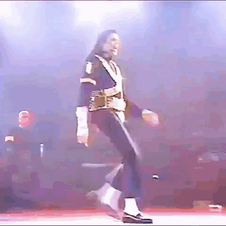

Michael Jackson, often referred to as the "King of Pop," was an American singer, songwriter, and dancer who became one of the most famous and influential entertainers in the world. Born on August 29, 1958, in Gary, Indiana, Jackson began his career as a child performer with his family in the group known as The Jackson 5. He later embarked on a solo career that catapulted him to global stardom.
Jackson's music is characterized by its blend of pop, rock, and R&B elements, and he is known for his distinctive voice and innovative dance moves. Some of his most iconic songs include "Thriller," "Billie Jean," "Beat It," and "Smooth Criminal." His album "Thriller" remains the best-selling album of all time.
In addition to his musical achievements, Michael Jackson was also known for his humanitarian efforts and philanthropy. He supported various charitable causes throughout his life and used his platform to raise awareness about important social issues.
Despite facing controversies and legal challenges later in his life, Michael Jackson's legacy as a groundbreaking artist and cultural icon continues to endure. He passed away on June 25, 2009, but his influence on music and pop culture remains significant.
